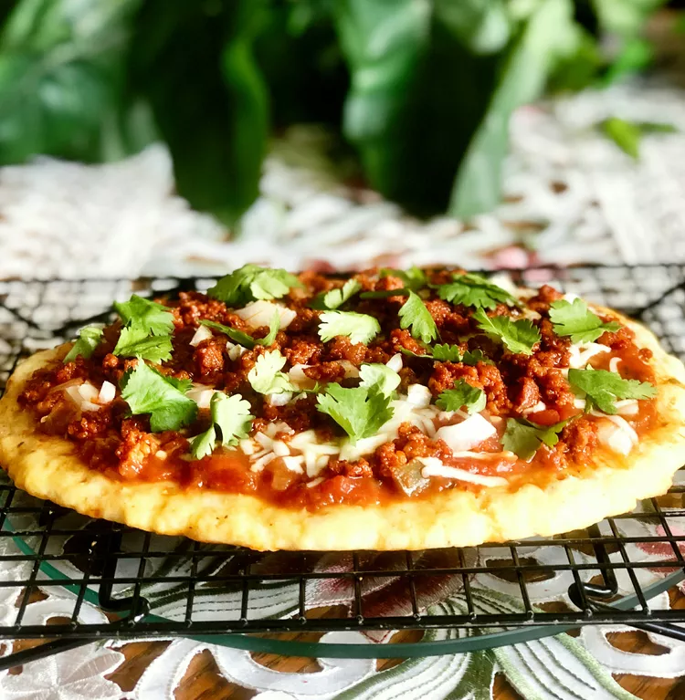

Keto Fathead Pizza with Chorizo and Salsa

Description
Pizza crust made out of cheese results in a delicious, crispy crust. As far as the toppings go, add as many or as little as you want. What's best of all, it's keto!
Ingredients
- 1 ½ cups mozzarella cheese, shredded
- 2 tablespoons cream cheese, softened
- ¾ cup almond flour
- ½ teaspoon salt
- ½ teaspoon oregano
- ½ teaspoon garlic powder
- ¼ teaspoon freshly ground black pepper, or to taste
- 1 egg, beaten, at room temperature
- cooking spray
- 2 ounces Mexican chorizo, crumbled
- ½ cup mozzarella cheese, shredded
- ¼ cup salsa
- 1 tablespoon diced onion
- 2 tablespoons cilantro leaves for garnish
Steps
- Preheat the oven to 400 degrees F (200 degrees C).
- Place 1 1/2 cups mozzarella cheese and cream cheese in a microwave-safe bowl and heat until melted, about 1 1/2 minutes. Stir well. Add almond flour, salt, oregano, garlic powder, and black pepper. Use your hands to combine dough. Once combined, add beaten egg and stir until well incorporated.
- Spray 2 large pieces of parchment paper with non-stick spray. Place dough on one piece of parchment paper and cover with the second piece. Using your hands or a rolling pin, flatten pizza dough to a 10-inch round. Remove top parchment paper and place bottom piece of parchment paper with flattened pizza dough onto a baking sheet. Pierce all of the pizza dough with a fork to prevent the dough from rising.
- Bake in the preheated oven until bottom starts to brown, 12 to 17 minutes.
- Meanwhile place chorizo in a microwave-safe bowl and cover with a paper towel. Microwave in three 1-minute increments, uncovering and stirring meat well after each.
- Remove pizza crust from oven and top with 1/2 cup mozzarella cheese, chorizo, salsa, and onion. Bake until cheese is melted, 4 to 6 minutes more. Garnish with cilantro leaves.